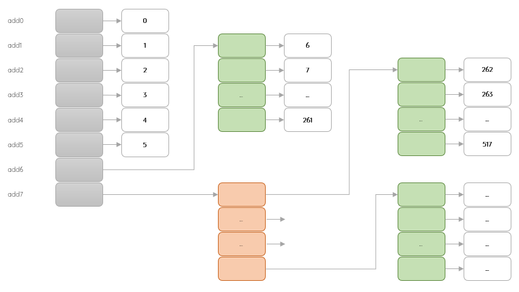

- 知识点 Keypoints
-
文件目录文件分配方式文件存储管理
文件 File
- 逻辑结构
- 物理结构
目录 Directory
文件分配方式
- 顺序分配
- 链式分配
- 索引分配
- . 拿空间换时间
- . 索引分配允许文件离散的分配在各个磁盘块中，系统会为每个文件建立一张索引表：记录了文件的各个逻辑块对应的物理块
- . 存放索引表的磁盘块称为 索引块 ，存放文件数据的磁盘块称为数据块
- . 需要知道一个索引块放几个索引，从而更加多级索引求整体大小容量
- . 可以创建单索引、多索引或混合索引
- 某文件系统采用多级索引结构。若磁盘块的大小为512B，每个块号需占3B，那么根索引采用一级索引时的文件最大长度为（）KB，采用二级索引时的文件最大长度为（）KB。
-
每个磁盘块有块号：512/3=170个。放不下171一级索引，满时：170*512B=85*1024B=85KB二级索引，满时：170*170*512B=85*170KB=14450KB
- 某文件系统存储文件采用索引节点法。磁盘快和索引块大小均为1KB，每个文件的索引节点有8个地址项add0-add7。每个地址项大小4B，其中add0-add5为直接索引，add6为一级索引，add7为二级索引。如果某文件的逻辑块号分别是0、260和518，则系统应分别采用（）。该文件系统可以表示的单个文件的最大程度是（）KB。
-
直接地址索引、一级间接地址索引和二级间接地址索引直接地址索引、二级间接地址索引和二级间接地址索引一级地址索引、一级间接地址索引和二级间接地址索引一级地址索引、二级间接地址索引和二级间接地址索引
-
51810301651665789
- 每个索引项对应的文件的逻辑块号
每个块地址项个数 = 块大小1KB/地址项大小4B = 256个
 索引分配 ∴ 0、260和518逻辑块号分别采用直接地址索引、一节间接地址索引和二级间接地址索引，选A单个文件最大为：6*1KB+256*1KB+256*256*1KB=65798KB，选D
文件存储管理
- 空闲表
- 空闲链
- 位示图
- . 用来记录文件存储器的使用情况
- . 每一位bit对应文件存储器的一个物理块：0、1表示空闲还是占用
- . 所有的空闲块使用指针指向下一个空闲块：以链表的形式形成空闲块链
- . 存储单位是 字长 ，如32位字长
- . 物理块编号 / 字长 = 商 ... 余数；商是字数|第几字，余数是位数|第几位；均从0开始
- 某系统的字长为32位，物理块从0开始，第33号物理块位于第1字，第1位标记为1；33|32=1...1
-
31 30 ... 1 0 第0字 . . . . . 第1字 . . ... 1 . - 某文件管理系统采用位示图Bitmap记录磁盘使用情况。计算机系统的字长为64位，磁盘容量为512GB，物理块大小为4MB，那么位示图的大小为多个字？
-
1. 从容量守恒入手x * 64 * 4MB = 512GB∴ x = 512GB / 4MB /64 = 2K2. 从编址入手物理块数 = 512GB / 4MB = 128K每个物理块对应个bit位，共需要128K个bit位∵ 字长是64bit∴ 位示图共有：128K / 64 = 2K
- 某文件管理系统采用位示图Bitmap记录磁盘使用情况。物理块依次编号为0，1，2...。系统字长为32位，每一位对应文件存储器上的一个物理块，使用01表示空闲或占用。问：第4195号物理快分配给某文件，其对应的位示图中第几个字描述？该字的第几位应该置1？
-
4195 / 32 = 131余3∴ 对应第131个字第3位可以使用特殊值推导